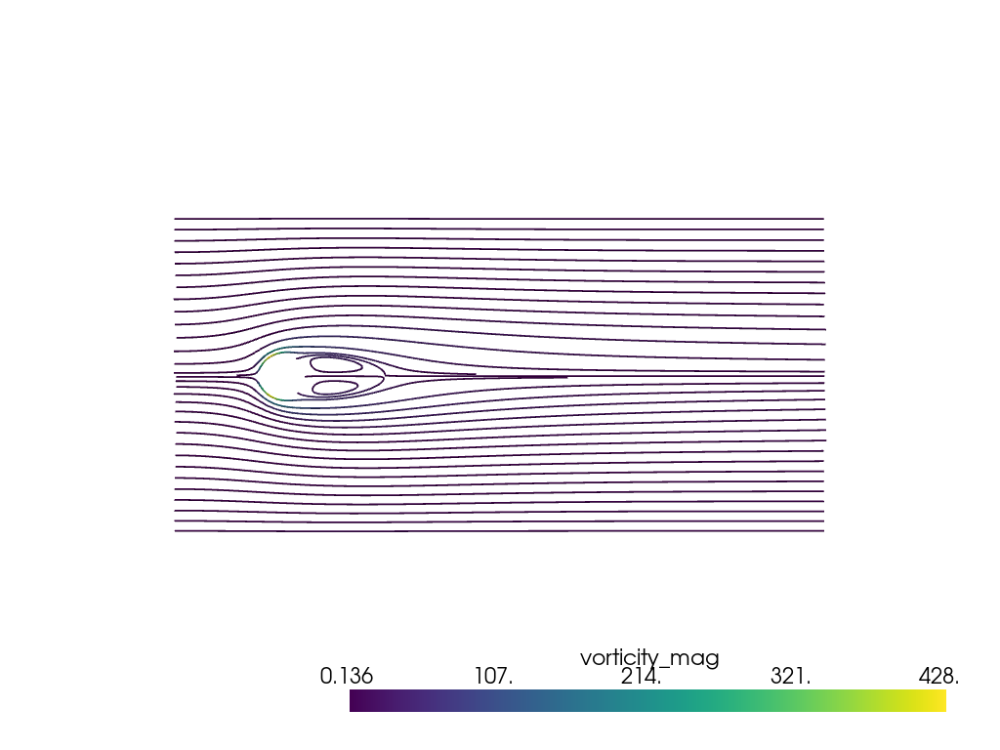

streamlines_evenly_spaced_2D¶
- ExplicitStructuredGrid.streamlines_evenly_spaced_2D(vectors=None, start_position=None, integrator_type=2, step_length=0.5, step_unit='cl', max_steps=2000, terminal_speed=1e-12, interpolator_type='point', separating_distance=10, separating_distance_ratio=0.5, closed_loop_maximum_distance=0.5, loop_angle=20, minimum_number_of_loop_points=4, compute_vorticity=True, progress_bar=False)¶
2Dデータに等間隔の流線を生成します。
This filter only supports datasets that lie on the xy plane, i.e.
z=0. Particular care must be used to choose a separating_distance that do not result in too much memory being utilized. The default unit is cell length.警告
This filter is unstable for
vtk<9.0. See pyvista issue 1508.- パラメータ
- vectors
str,optional 積分するアクティブベクトルフィールドの文字列名．
- start_positionsequence(
float),optional The seed point for generating evenly spaced streamlines. If not supplied, a random position in the dataset is chosen.
- integrator_type{2, 4},
optional The integrator type to be used for streamline generation. The default is Runge-Kutta2. The recognized solvers are: RUNGE_KUTTA2 (
2) and RUNGE_KUTTA4 (4).- step_length
float,optional Constant Step size used for line integration, expressed in length units or cell length units (see
step_unitparameter).- step_unit{'cl', 'l'},
optional 均一積分ステップ単位．有効な単位は LENGTH_UNIT (
'l') と CELL_LENGTH_UNIT ('cl') だけに制限されます．デフォルトは CELL_LENGTH_UNIT :'cl'です．- max_steps
int,optional Maximum number of steps for integrating a streamline. Defaults to
2000.- terminal_speed
float,optional 積分を終了する端子速度の値です．
- interpolator_type
str,optional ポイントまたはセルによる流線積分中にセルの位置を特定するために，速度フィールド補間のタイプを設定します．セルロケータはポイントロケータよりも堅牢です．オプションは
'point'または'cell'('p'および'c'の省略形もサポートされています．)です．- separating_distance
float,optional The distance between streamlines expressed in
step_unit.- separating_distance_ratio
float,optional Streamline integration is stopped if streamlines are closer than
SeparatingDistance*SeparatingDistanceRatioto other streamlines.- closed_loop_maximum_distance
float,optional The distance between points on a streamline to determine a closed loop.
- loop_angle
float,optional The maximum angle in degrees between points to determine a closed loop.
- minimum_number_of_loop_points
int,optional The minimum number of points before which a closed loop will be determined.
- compute_vorticitybool,
optional Vorticity computation at streamline points. Necessary for generating proper stream-ribbons using the
vtkRibbonFilter.- progress_barbool,
optional 進行状況を示す進行状況バーを表示します．
- vectors
- 戻り値
pyvista.PolyDataこれにより，各セル(つまり，ポリライン)が流線を表すポリラインが出力として生成されます．各流線に関連付けられた属性値はセルデータに格納され，流線ポイントに関連付けられた属性値はポイントデータに格納されます．
例
Plot evenly spaced streamlines for cylinder in a crossflow. This dataset is a multiblock dataset, and the fluid velocity is in the first block.
>>> import pyvista >>> from pyvista import examples >>> mesh = examples.download_cylinder_crossflow() >>> streams = mesh[0].streamlines_evenly_spaced_2D(start_position=(4, 0.1, 0.), ... separating_distance=3, ... separating_distance_ratio=0.2) >>> plotter = pyvista.Plotter() >>> _ = plotter.add_mesh(streams.tube(radius=0.02), scalars="vorticity_mag") >>> plotter.view_xy() >>> plotter.show()
 このフィルターを使ったその他の例については、 2D流線 を参照してください。